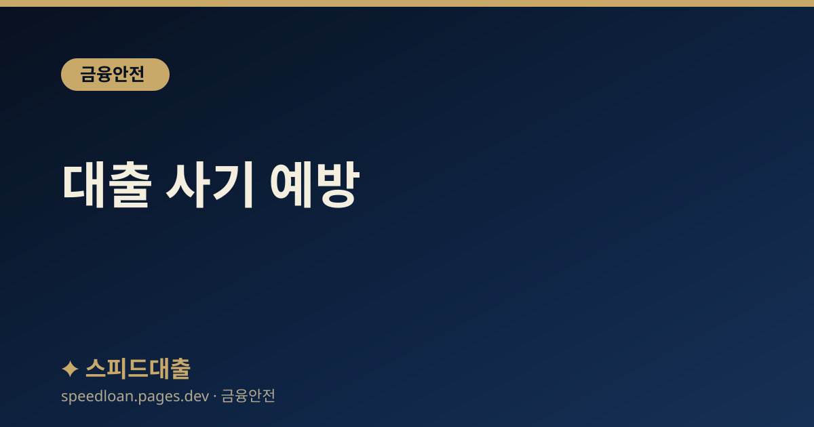

대출 사기 예방
정부지원 사칭, 저금리 대환 빙자, 앱 설치 유도 등 대표적인 대출 사기 수법과 예방 수칙을 안내합니다.

대출 사기는 왜 계속 진화하는가
대출 사기는 급전이 필요한 사람의 심리를 노려 점점 정교해지고 있습니다. 공식 기관이나 은행의 이름을 그대로 사용하고, 실제와 비슷한 문자 양식이나 앱 화면을 흉내 내기 때문에 겉모습만으로는 구별이 어려운 경우가 많습니다. 그래서 개별 수법을 외우는 것보다, 아래에서 설명하는 몇 가지 공통 원칙을 지키는 편이 더 효과적입니다.
아래 정보는 일반적인 예방을 돕기 위한 참고 자료입니다. 의심스러운 연락을 받았다면 스스로 판단하기보다 공식 대표번호로 다시 확인하는 습관이 가장 중요합니다.
많은 피해자가 사기를 당한 뒤 '나는 속지 않을 줄 알았다'고 말합니다. 그만큼 요즘의 수법은 정교해서 지식이 있는 사람도 상황에 따라 넘어갈 수 있습니다. 따라서 자신을 과신하기보다, 돈이나 정보를 넘기기 직전에 반드시 한 번 멈추어 확인하는 절차를 습관으로 만드는 것이 가장 현실적인 방어책입니다.
대표적인 사기 수법
다음은 자주 보고되는 유형들입니다. 수법은 조금씩 달라도 결국 돈을 먼저 보내게 하거나 개인정보를 넘기게 만드는 흐름은 비슷합니다.
- 정부지원 대출 사칭: '지원 대상자로 선정되셨다'는 문자를 보내 가짜 콜센터로 연결합니다.
- 저금리 대환 빙자: 기존 대출을 갚으면 낮은 금리로 바꿔 준다며 사기범 계좌로 상환을 유도합니다.
- 악성 앱 설치 유도: 상담을 빙자해 원격제어 앱이나 가짜 금융 앱을 깔게 한 뒤 전화를 가로챕니다.
- 신용 작업 빙자: 신용점수를 올려 주겠다며 수수료를 요구합니다.
- 통장 및 휴대폰 요구: 거래 실적이 필요하다며 체크카드나 통장을 넘기게 해 대포통장에 악용합니다.
사기 문자·통화의 실제 흐름
많은 피해가 비슷한 각본을 따라 진행됩니다. 흐름을 미리 알아 두면 중간에 멈추기가 쉬워집니다.
먼저 저금리 대출이나 정부지원 대출을 알리는 문자가 옵니다. 링크를 누르거나 회신하면 상담원이 연결되어, 대출을 위해 앱을 설치하고 몇 가지 정보를 입력하라고 안내합니다. 이 과정에서 원격제어 앱이 깔리면 이후 내가 은행에 거는 전화까지 사기범에게 연결될 수 있습니다.
이어서 '기존 대출을 먼저 정리해야 새 대출이 나온다'며 특정 계좌로 상환금을 보내라고 합니다. 정상적인 상환은 해당 금융회사의 가상계좌로만 이루어지므로, 개인 계좌로 보내라는 요구가 나오는 순간이 바로 사기를 알아차릴 지점입니다.
핵심 예방 수칙
복잡한 판단이 어렵다면 다음 원칙만 기억해도 큰 도움이 됩니다.
- 먼저 걸려온 대출 전화와 문자에는 응답하지 않는 것을 기본으로 합니다.
- 문자로 온 앱 설치 링크는 누르지 않습니다. 정식 금융회사는 이런 방식으로 앱을 깔게 하지 않습니다.
- 상환금이나 수수료를 개인 계좌로 보내라는 요구는 사실상 사기로 보아야 합니다.
- 의심되면 통화를 끊고 금융회사의 공식 대표번호로 직접 다시 확인합니다.
- 악성 앱이 의심되면 같은 휴대폰이 아닌 다른 전화기로 확인 전화를 겁니다.
특히 조심해야 할 상황
사기범은 상대가 판단하기 어려운 상황을 일부러 만들어 냅니다. 다음과 같은 순간에는 결정을 잠시 미루고 주변에 확인하는 것이 안전합니다.
- 당장 돈이 급해 심리적으로 쫓기고 있을 때 — 조급함이 판단을 흐립니다.
- '지금 아니면 자격이 사라진다'며 시간을 재촉당할 때.
- 전화, 문자, 앱 설치가 동시에 진행되며 정신이 없을 때.
- 금융 거래에 익숙하지 않은 어르신이 낯선 절차를 안내받을 때.
특히 가족 중 어르신이 계시다면, 모르는 번호의 대출 문자나 앱 설치 안내는 반드시 가족에게 먼저 상의하도록 미리 일러두는 것이 좋습니다. 한 사람이라도 중간에 확인 절차를 거치면 피해를 막을 가능성이 크게 올라갑니다.
당했다면 즉시 이렇게
송금 직후라면 아주 짧은 시간 안에 대응하는 것이 환수 가능성을 높입니다. 당황스럽더라도 아래 순서대로 움직이시기 바랍니다.
- 경찰(112) 또는 금융감독원(1332)에 신고하고, 송금한 은행에 지급정지를 요청합니다.
- 악성 앱이 의심되면 휴대폰을 비행기 모드로 바꾸고 초기화하거나 전문 점검을 받습니다.
- 개인정보가 유출됐다면 계좌 일괄 지급정지와 비대면 개설 차단 서비스를 활용합니다.
- 가족이나 지인이 피해를 당했다면 대신 나서서 신고와 지급정지 절차를 도와주는 것이 좋습니다.
무엇보다 피해자 본인을 탓하지 않는 것이 중요합니다. 사기범은 누구라도 속을 수 있도록 각본을 짜기 때문에, 빠른 신고와 대응에 집중하는 편이 회복에 도움이 됩니다. 주변에 비슷한 피해를 겪을 만한 사람이 있다면, 내가 알게 된 수법을 미리 알려 주는 것만으로도 또 다른 피해를 막을 수 있습니다.
자주 묻는 질문
정부기관이라며 대출을 권유하는 전화가 왔습니다. 진짜인가요?
정부 기관은 개인에게 전화나 문자로 먼저 대출을 권유하지 않습니다. 이런 연락은 사칭일 가능성이 높으므로, 통화를 끊고 해당 기관의 공식 대표번호로 직접 확인해 보시는 것이 안전합니다.
상담 과정에서 앱을 깔라고 하는데 설치해도 되나요?
정식 금융회사는 문자 링크로 앱을 설치하게 하지 않습니다. 원격제어나 가짜 금융 앱은 통화와 인증을 가로채는 데 악용될 수 있으니 설치하지 마시고, 이미 설치했다면 비행기 모드 전환 후 초기화나 전문 점검을 권합니다.
돈을 이미 보냈습니다. 되찾을 수 있나요?
가능성은 시간에 크게 좌우됩니다. 송금 직후 곧바로 은행에 지급정지를 요청하고 112 또는 1332에 신고하면 환수 가능성이 올라갑니다. 늦더라도 반드시 신고 절차를 진행하시는 것이 좋습니다.
기존 대출을 먼저 갚아야 새 대출이 나온다는 말은 사실인가요?
상환금을 특정 개인 계좌로 보내라고 한다면 사기일 가능성이 매우 높습니다. 정상적인 상환은 해당 금융회사의 가상계좌로만 이루어지므로, 이런 요구를 받으면 통화를 끊고 공식 번호로 확인하시기 바랍니다.
공식 참고 기관
본 사이트의 콘텐츠는 아래 공공·공식 기관의 공개 자료를 참고하여 작성하며, 구체적인 조건과 최신 제도는 해당 기관에서 직접 확인하시기 바랍니다.
본 사이트는 대출을 직접 제공하거나 중개하지 않으며, 금융상품 가입을 권유하지 않습니다. 모든 정보는 일반적인 참고용이며, 실제 대출 가능 여부, 한도, 금리, 조건은 금융회사 심사와 개인 신용상태에 따라 달라질 수 있습니다.